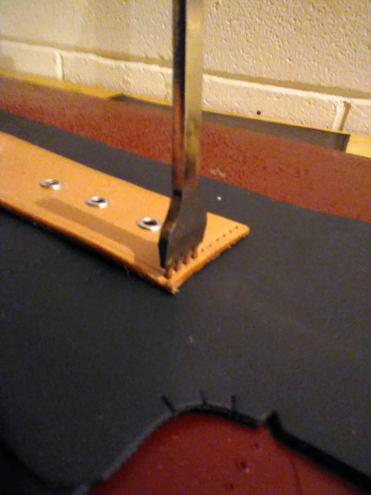
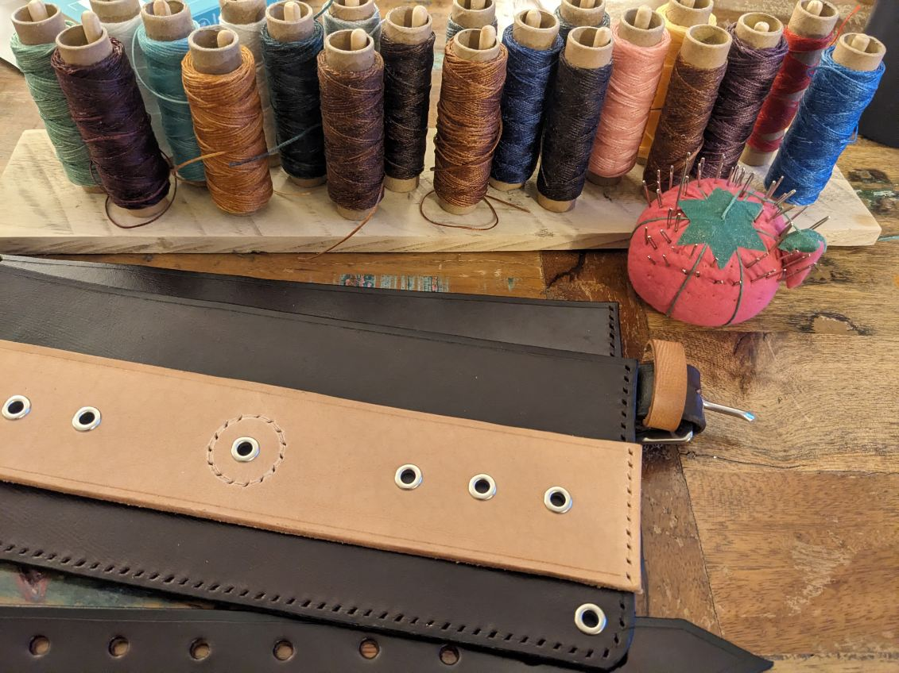
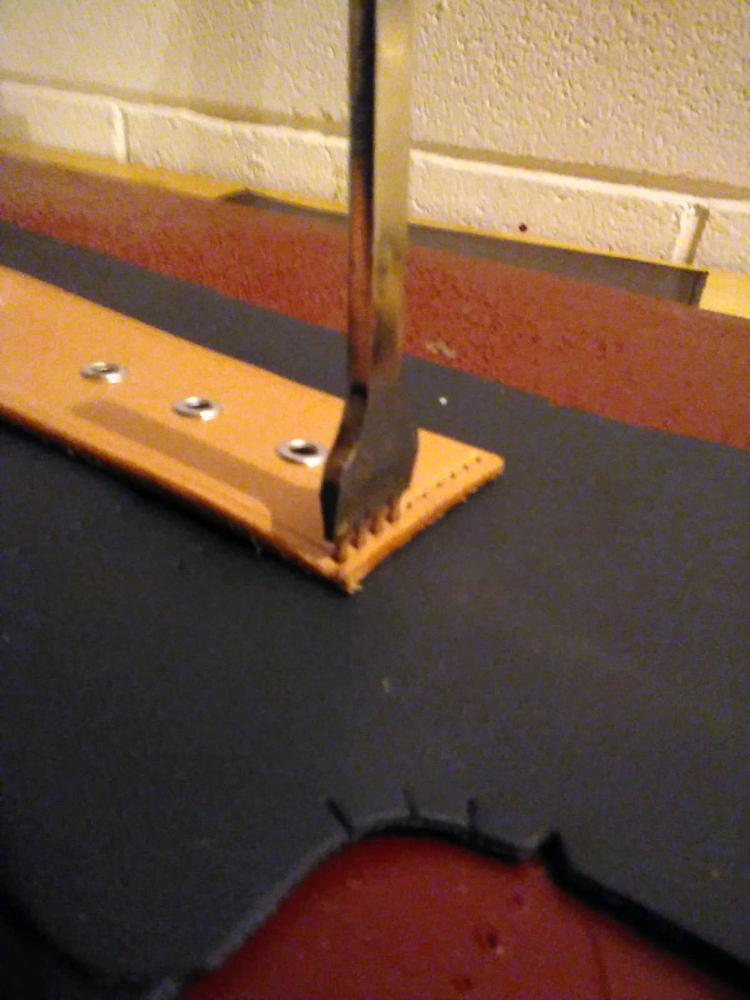
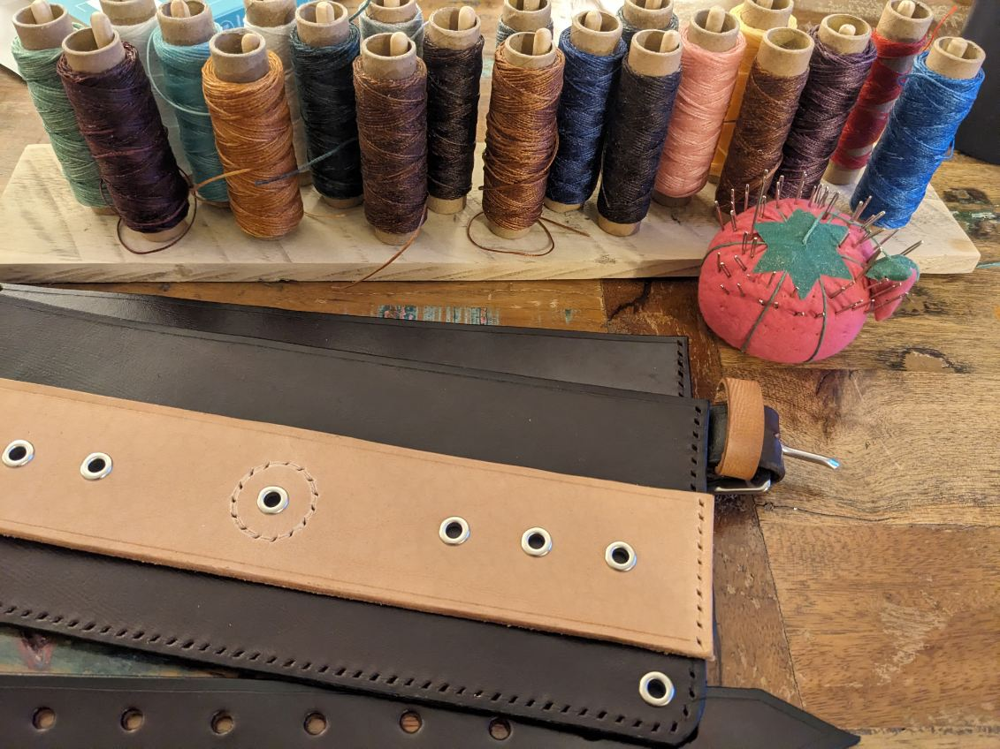

|
U Vrlici, oni imaju deo nošnje što se zove 'kostobrane za
potkolenice'. Oni nose Vrlične kostobrane oko Uskrsu dok oni vežbaju
običaj 'Čuvanje Hristovog groba'. U ovim slicama, ti možeš da vidiš
Vrlični muškarci u nošni, na nogama nose svoje kostobrane. Nedavno ja
sam našao sliku muškarca koji je nosio nošnju sa Korduna. Na njegovim
čakširama, vidiš šaru petlje. Ja sam želio da napravim kostobrane sa
ovom šarom, i tako ja bih imao kostobrane 'sa Korduna'...! Ja sam
napravio moje kostobrane od sintetičkog filca, kože, i pamuka. Mislim
da prave kostobrane su izrađene od vune, ali teško ja da nađem vunu
ovđe. Ja sam kupio kožu iz lokalne prodavonice, i ja sam postavio
boju. I pamuk je... zgodan -- možeš da ga nađeš svugde, ovđe. Posle
toga, šio sam sve. Počeo sam u Maj, i ja sam završio u Jul. Ja sam
naučio kako da vezem na ovim, i zadovoljan sam sa mojom radom. Crven i
Crn je "tema" što mnogo volim: moj prvi pojas je crven i crn, i moje
kostobrane takođe. Uskoro, ja ću da napravim pravu, graničarsku
kabanicu, i će biti crvenu takođe! Možda treba da napravim pašnjaču sa
crnom i crvenom bojama, kao oni imaju tamo... U međuvrijemena, pravim
mnoge šajkače, Ličke kape, i šubare. Ja ću da ih prodajem na 'Serb
Fest', koji je velika žurka što moja crkva ima u Septembar. Možda mi
ćemo da se videmo tamo :)
|
In Vrlika, they have a piece of costume which is called "shin guards".
They wear Vrlikan shinguards around Easter while they practice the
custom of "Watching Christ's Tomb". In these pictures, you can see
Vrlikan men in costume, on their legs they wear their shin guards.
Recently I found an image of a man who wore costume from Kordun. On
his pants, you see a pattern of a loop. I wanted to make shin guards
with this pattern, so that I would have shin guards "from Kordun"...!
I made my shin guards from synthetic felt, leather, and cotton. I
think that real shin guards are made of 'vuna' ( a special home-made
wool ), but it's difficult to find vuna here. I bought the leather
from a local shop, and I set the color. And cotton is... handy -- you
can find it everywhere, here. After that, I sewed everything. I
started in May, and I finished in July. I learned how to embroider on
these, and I'm satisfied with my work. Red and black is a "theme" that
I like a lot: my first pojas ( a woven, cloth belt ) is red and black,
and my shin guards as well. Soon, I'll make a real, border-guard's
kabanica ( a long. often red cloak ), and it'll be red as well! Maybe
I should make a pašnjača ( a Vrlikan leather belt ) like they have
there... In the meantime, I'm making a lot of šajkačas ( _the_ Serbian
hat ), Lika caps ( round hats from Lika ), and šubaras ( tall, fluffy
hats). I'll sell them at 'Serb Fest', which is a big party that my
church has in September. Maybe we'll see each other there :)
|


 


